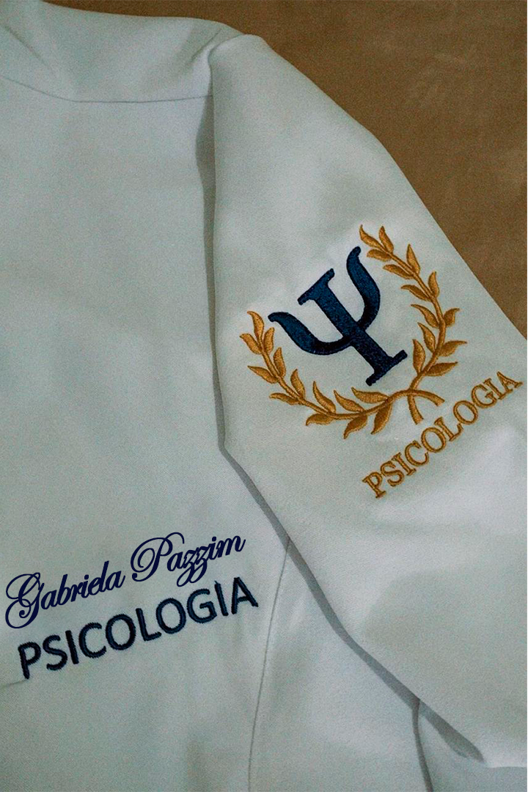

Saúde mental & medicação
Psicofarmacologia
Centro Educacional
Sete de Setembro
Psicologia em formação
Sou Gabriela, estudante de Psicologia movida pela curiosidade, pela escuta e pelo desejo de compreender as histórias que habitam cada pessoa.

semestre
Psicologia
Acredito em
Escutar também é uma forma de cuidar.
A Psicologia me ensina, todos os dias, que cada pessoa carrega um universo singular. Meu propósito começa no respeito por essa singularidade — com presença, sensibilidade e responsabilidade.

Identidade, ciência & cuidadoSobre mim
Atualmente no quinto semestre da graduação, aprofundo meu olhar sobre o comportamento humano e sobre o papel da Psicologia no bem-estar e no desenvolvimento das pessoas.
Minha caminhada é guiada por escuta ativa, empatia, comunicação e pensamento analítico. Busco experiências acadêmicas e profissionais em que eu possa aprender, contribuir e crescer com ética.
Formação complementar
Cursos que atravessam mente, corpo e comportamento — construindo uma base plural para a prática futura.
Contato
Para oportunidades, projetos acadêmicos ou simplesmente trocar ideias sobre Psicologia.